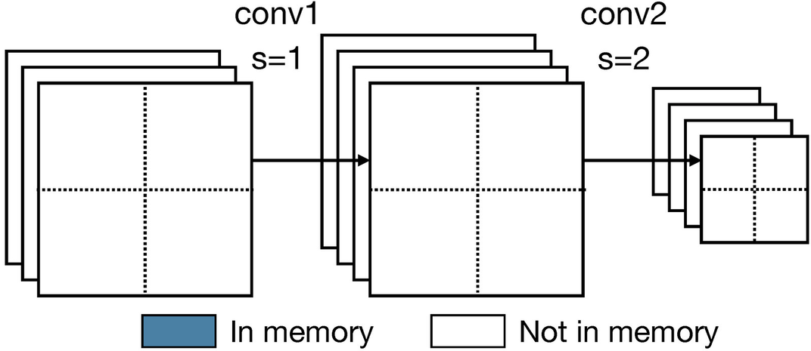
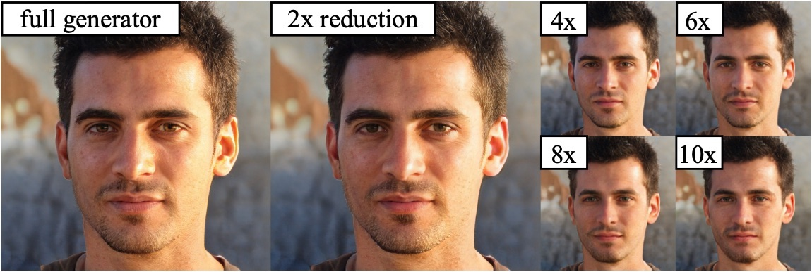
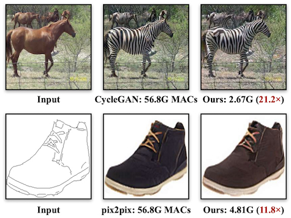
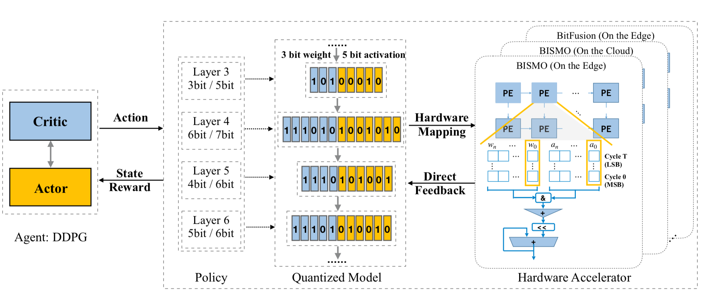
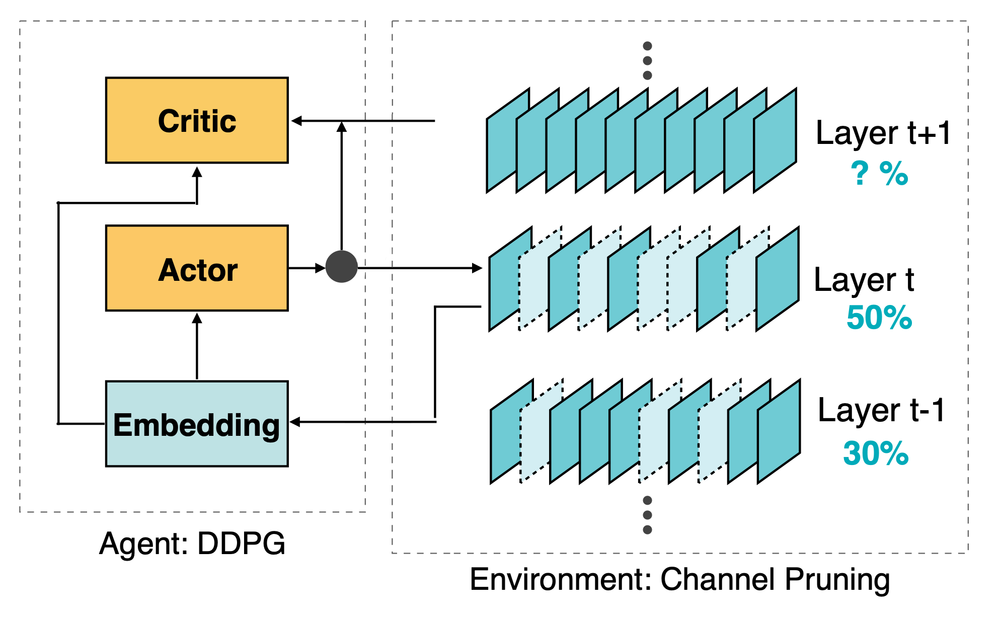

Ji Lin

Contact:
jilin AT mit.edu
I am currently a second-year Ph.D. student at MIT EECS, advised by Prof. Song Han. My research interests lie in efficient and hardware-friendly machine learning and its applications.
Before coming to MIT, I received my B.Eng. in Electronic Engineering from Tsinghua University. During summer 2020, I interned at Adobe Research with Jun-Yan Zhu and Richard Zhang.
News
- [11/2020] Got into NVIDIA Graduate Fellowship Finalist.
- [09/2020] MCUNet and DiffAugment accepted to NeurIPS.
- [08/2020] Check out MCUNet! >70% ImageNet accuracy on off-the-shelf commercial microcontrollers.
- [08/2020] Our TSM repo receives 1k stars!
- [07/2020] I started summer internship at Adobe Research.
- [11/2019] "Training Kinetics in 15 minutes" was highlighted by Dario Gil at AI Research Week opening remarks.
- [11/2019] TSM was selected as the project of the month by NVIDIA Jetson Community.
Publications [Full List]
* indicates equal contribution
|  |
MCUNetV2: Memory-Efficient Patch-based Inference for Tiny Deep Learning
|
|  |
Anycost GANs for Interactive Image Synthesis and Editing
|
|
MCUNet: Tiny Deep Learning on IoT Devices
Press:
MIT News (homepage spotlight) /
WIRED /
MIT TR-China /
IBM /
Morning Brew /
Stacey on IoT /
Analytics Insight /
Techable /
Tendencias
Spotlight Presentation
|
|
Differentiable Augmentation for Data-Efficient GAN Training
Press:
VentureBeat
|
|  |
GAN Compression: Efficient Architectures for Interactive Conditional GANs
|
|
APQ: Joint Search for Network Architecture, Pruning and Quantization Policy
|
|
AutoML for Architecting Efficient and Specialized Neural Networks
|

|
TSM: Temporal Shift Module for Efficient Video Understanding
ICCV 2019 /
arXiv
Training Kinetics in 15 Minutes: Large-scale Distributed Training on Videos
Press:
MIT News /
MIT Technology Review /
WIRED /
Engadget/
NVIDIA News /
Industry Integration@NVIDIA
|
|  |
HAQ: Hardware-Aware Automated Quantization
Oral Presentation
Hardware-Centric AutoML for Mixed-Precision Quantization
|
|
Defensive Quantization: When Efficiency Meets Robustness
|
|  |
AMC: AutoML for Model Compression and Acceleration on Mobile Devices
|

|
Runtime Neural Pruning
Runtime Network Routing for Efficient Image Classification
|
Talks
- [02/2021]: MCUNet: Tiny Deep Learning on IoT Devices @ MIT Technology Review’s Future Compute 2021
- [12/2020]: MCUNet: Tiny Deep Learning on IoT Devices @ Tsinghua AI TIME
Academic Service
- Conference reviewer: ICLR, ICML, NeurIPS, CVPR, ICCV, ECCV, IJCAI, AAAI, ACMMM
- Journel reviewer: T-PAMI, JMLR, T-MM